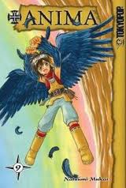

Alternative Name(s): Plus Anima;
Author(s): Mukai Natsumi
Genres: Action, Adventure, Comedy, Fantasy
Release: 2000
Satus: Complete
Type: Manga
Length: 10 Volumes 44 Chapters
Read Online @:


More info @:

Notes
Ok so theres these kids that can suddenly turn into animals...freakeh rite? Well not really cause they don't fully change into their respective animal~ like the bear gets bear paws, the fish boy gets a tail (merman anyone?), bat get cute lil bat wings and the crow gets well crow wings. So they only get the cute and cuddle parts of the animal I suppose~ As you can imagine in this world people call these guys mutants and try to either hunt them down (die die die) or there are lucrative businesses for such beings. Don't worry this work is intended for children and the innocent so you will love how these four kids survive in a somewhat hostile environment.